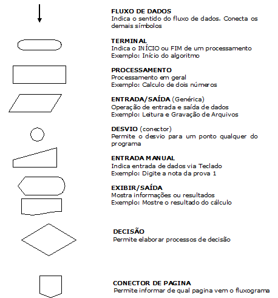

Fluxograma e variáveis

Fluxograma:	"Ferramenta utilizada ´para representar graficamente o algoritmo, isto é, sequencia logica e coerente do fluxo de dados";
			"Tipo de diagrama e pode ser entendido como uma representação esquemática de um processo";

Diagrama de blocos:	"utilizado para representar o método do fluxograma";
	
	Processo
	Decisão
	Terminal
	Documento
	Vários documentos
	Entrada manual
	Preparação
	Dados
	Base de dados
	Display

Variaveis:  "Um objeto (uma posição, frequentemente localizada na memória) capaz de reter e representar um valor ou expressão";
			"Um espaço na memoria do computador destinado a um dado que é alterado durante a execução do algoritmo";

Tipos de variaveis: 
	Numéricas: pode ser interas;
	Caracteres: letras;
	Alfanumericas: pode receber letras e numeros;
	logica: verdadeira ou falsa;

Constante: "Valores imutáveis e não são alterados durante a vida util do programa";

Link: https://www.flowgorithm.org/
